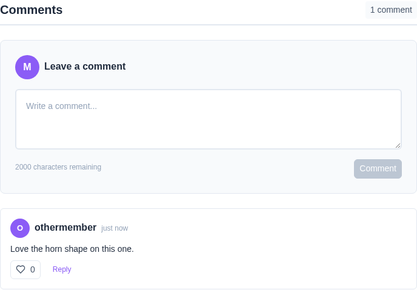
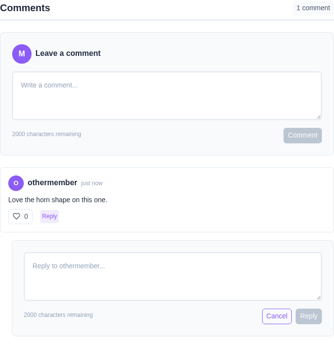
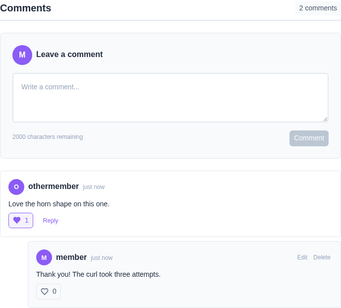
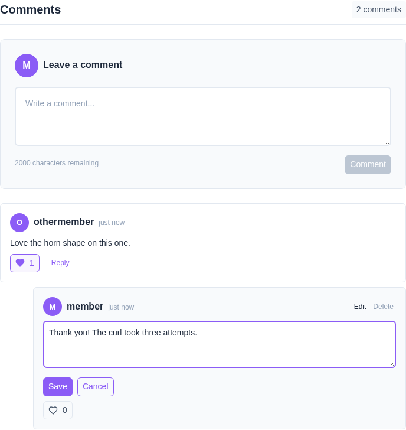
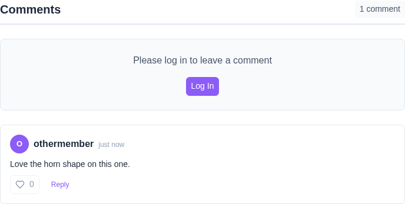

Say something about a character or a gallery, and reply to what somebody else said
Every character page and every gallery page carries a Comments section at the bottom. It is the same section in both places, so anything below works identically whichever one you are looking at.
Comments are public to read. Anyone can open a character and see what has been said about it, whether or not they are signed in and whether or not they are a member of that community. Writing needs an account.
Reply to a comment and your reply sits under it
Every comment has its own heart and count
Edit or delete anything you wrote
Commenting notifies whoever owns the page
Scroll to Comments at the bottom of the page. The form sits at the top of the section, above everything already said, so you never have to scroll past a long thread to reach it.
Type and press Comment. The button stays greyed out until you have typed something — whitespace on its own does not count — and the counter beneath the box tracks how much of the 2000 character limit you have left. Go over it and the button greys out again rather than silently cutting your comment short.

Every top-level comment has a Reply link beneath it. Clicking it opens a second box directly under that comment, already addressed to whoever wrote it, with its own Reply and Cancel buttons.
Threads are one level deep on purpose. A reply carries no Reply link of its own, so a conversation stays a comment and the answers to it rather than fanning out into a tree nobody can follow.

Each comment carries its own heart and count, replies included. Clicking it fills the heart in and the count goes up; clicking again takes it back. There is no separate confirmation and nothing to undo — the heart is the toggle.
The count is visible to everyone, including signed-out visitors. The heart is only clickable once you are signed in.

Edit and Delete appear only on comments you wrote. They are absent from everybody else's, which is the quickest way to tell at a glance which comments in a thread are yours.
Edit turns the comment into a text box in place, with Save and Cancel. Cancel restores what was there before, so a half-finished edit costs nothing. Delete asks first, and cannot be undone once confirmed.

A visitor with no account reads the whole conversation exactly as a member does — every comment, every reply, every like count. Nothing is hidden behind signing in.
Where the form would be there is a prompt and a Log In button instead. That is the only difference.
